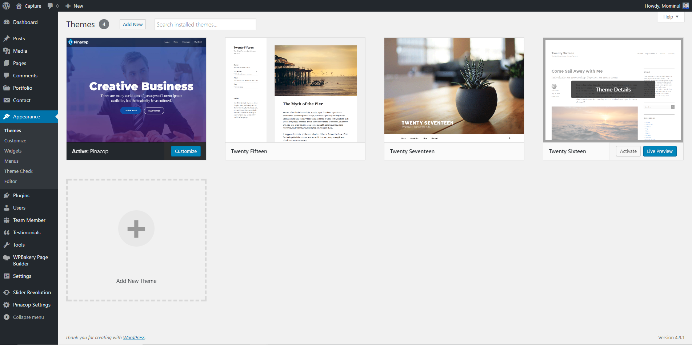
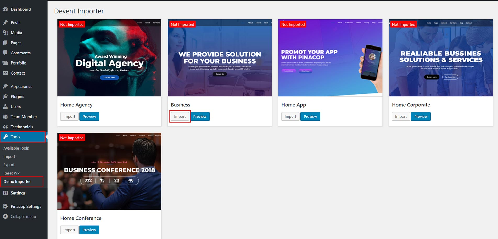
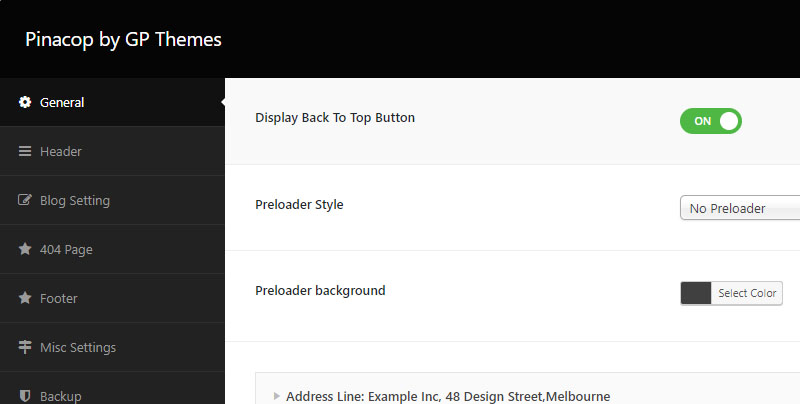
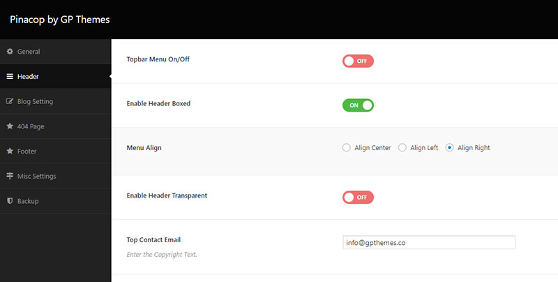
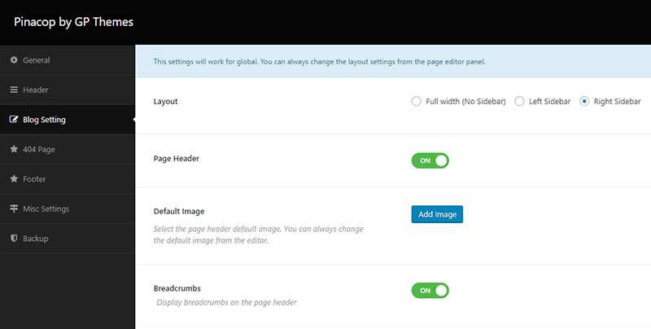
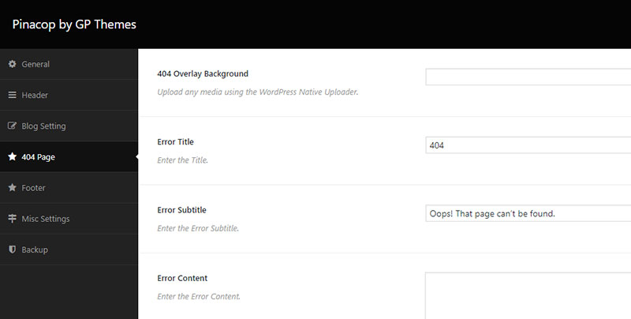
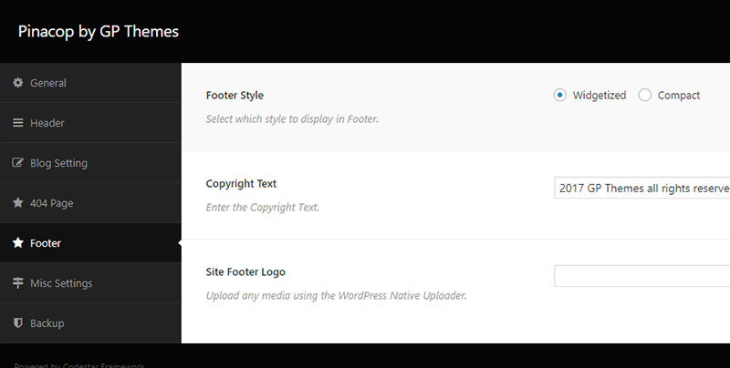
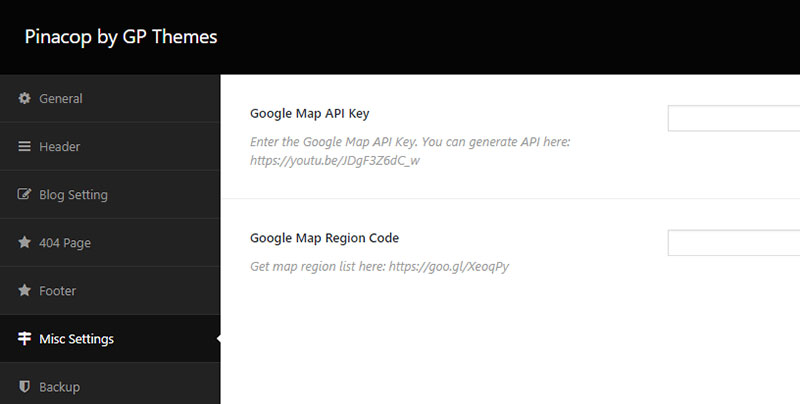
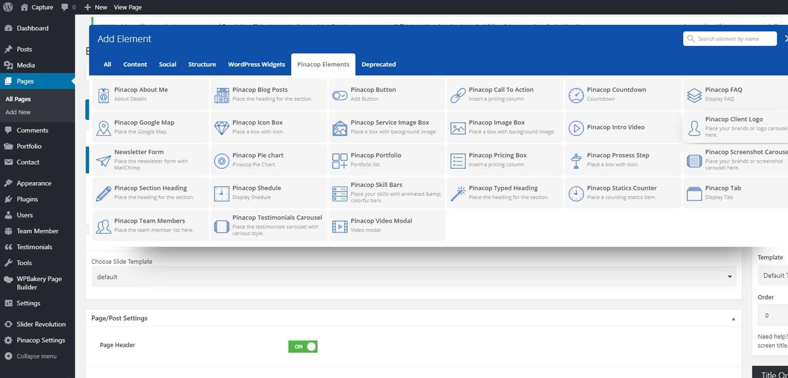

Welcome to Pinacop - A Multi-Concept Theme
Once you've downloaded the installation file on ThemeForest, extract it and locate a file called pinacop.zip. You can install the theme by using one of two installation methods:
Right after the theme was activated, a notification at the top of the screen will suggest to continue with the installation of the required and recommended plugins for getting the best our of your theme.

Pinacop for properly functioning required following plugins:
You can install recommended plugins according your needs.
You can either start building your site from scratch, or import one of our demo sites and then modify it to fit your needs. We will now explain how to do the latter.
Pinacop comes with one-click import module. Here's what you need to do:

You can upgrade your theme by performing the following steps:
WordPress by default has a limited number of menu items. When you import our demo site, which contains a lot of menu items, you might not be able to save changes you make to a menu. You can fix this problem by contacting your hosting and asking them to add the following lines to php.ini file:
max_input_vars = 5000
suhosin.post.max_vars = 5000 suhosin.request.max_vars = 5000
This problem is most likely related to JetPack and memory settings of your hosting. You can either disable JetPack or read what the JetPack developer wrote: Regarding the memory limit, please refer to the WordPress Codex section concerning this problem. Some sites that load many plugins alongside WordPress ultimately require a higher memory limit than WordPress defaults to, but since this is limited to specific hosts and configurations, it must be dealt with on an individual basis. You'll find the Codex article at: http://codex.wordpress.org/Common_WordPress_Errors#Allowed_memory_size_exhausted
Please use this tool to investigate reasons for slow loading: https://developers.google.com/speed/pagespeed/insights/?hl=en
If you get a white screen or some other error when trying to import our demo content, this probably happens because of the maximum execution time limit. You need to increase the maximum execution time (upload time) setting of your web server. The default maximum execution time on web servers is 30 seconds. Please increase it to 120 seconds. Possible ways of achieving this are:
Ask your hosting provider to take care of this for you.
Once you've installed Pinacop theme and Pinacop Ess plugin, you can start building your site. To customize the appearance and functionality of your web site to your needs you should to use Pinacop administrative panel.
Pinacop comes with robust and inteligent Admin Panel. It allows for easy and intuitive to set all aspects of appearance and function of theme. Creating your own skin has never been as easy. Plenty of options allows you to create the unique appearance of the page with a few clicks without writing a single line of code. This quick guide to the built-in Pinacop Admin Panel will show you how to do it.
Here you can set all general options of theme:

Here you can set Header Related Options:

Here you can set Blog Options:

Here you can set 404 Options:

Here you can set Footer Options:

Here you can set Map Options

Visual Composer for WordPress is drag and drop frontend and backend page builder plugin that will save you tons of time working on the site content. You will be able to take full control over your WordPress site, build any layout you can imagine – no programming knowledge required. Moreover, now you can choose either work on a backend or move your page building process to frontend and instantly see changes you make.
Have you ever noticed how much time you spend fighting with [shortcodes]? No more trial and errorswith “shortcodes magic” – Visual Composer will take care of that.
For your convenience Pinacop theme we have added many new functionality to the standard VC elements:
We have also add 20+ custom VC elements which add extra functionality to your website.

Full list of our premium VC elements:
In Pinacop We have implement popular Revolution Slider.
For more detailed information about Revolution Slider usage please see plugin documentation.
Visual Composer and Revlisder plugin are bundled with theme on basis Extended License which we buy from plugins developers. This means that the customer can legally use this plugins along with our theme.
But there is some limitations. Customer can't register this plugins, update it directly from developers and have no access to direct developers support.
Of course for our part, we strive to upgrade theme (with newest version of bundled plugins) after each upgrade of bundled plugins and we support these plugins in terms of their cooperation with our theme.
But if you would like to use the dedicated support from plugins developers and receive automatic upgrade of plugins you should consider purchasing a license for these plugins.
More informations about the benefits of direct licences you find here: Visual Composer, Revolution Slider